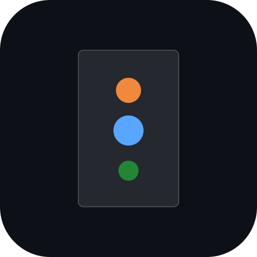

Mobile analytical workstation
Choose a display/analysis weighting. Wavelength labels are RGB approximations, not physical spectrometer settings.
Bandwidth is intentionally not exposed until a validated analytical model is available.